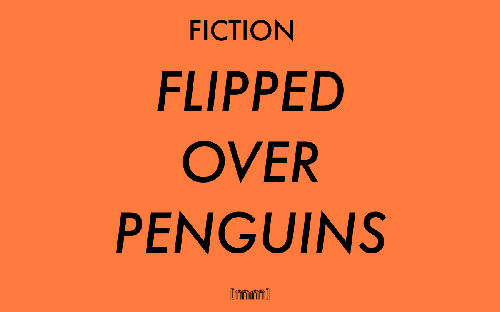

Fiction · Short story · English
Flipped Over Penguins
A short story.
Chapter 1
A suffocating wave of hot air on just another tuesday morning in Rome hit the passengers of the train. It’s the Rome metro line B, half way between Pietralata and Monti Tiburtini. The car is packed, a zingy smell of caramelised onions propagates from someone’s armpit.
Filippo has been lucky today, he found a place to sit stealing it from a old woman that raced against him to get to the prize. Bad luck, biatch, he thought.
With two-four-five-six-- six stops before he gets off, Filippo opens his bag to pull out his book. He will have about twelve minutes of complete peace in the madness of the Capital in the early morning. The guilty pleasure of switching off your ears and thinking about something better than the usual routine.
Filippo didn’t sleep well last night, his two years old son, Leonardo, decided he didn’t want to go to sleep and let him get some rest too. Ester, his wife, believes the baby can feel the growing tension between his parents and that’s the reason why he is not sleeping as he should. On the other hand, Filippo thinks Leonardo is giving them troubles because he is bored and he should attend a kindergarden, but they cannot afford it. Work sucks, he thinks, untying his bag.
He surely doesn’t have the greatest job in the whole world. He has been working at the Connor Quinn Inc. for five years now and management still think it’s not yet time to give him a contract. Well, he does have a contract, but it’s one of those temporary four months contracts renewed over and over the day it expires. One of those contracts that leave the employer with loads of tax deductions and the employee with a chain on the foot and not much more. All this for
900€ before taxes. Daffuck. He grins. It’s twenty-two past eight and people here smell like minestrone.
Unfortunately Filippo it’s forced to take public transports since seven months ago his seventeen years old Panda has been stolen, and, obviously, never found. He loved his car and being stuck in traffic. There was a feeling of community in it. Everybody together, everyone in their hot tin, the radio pumping some love song, keeping your windows opens with your elbow out of it like an american pimp, even though it was just a Panda. Even though it was just a fantasy.
I can’t even afford to dream anymore. I start thinking my mom was right.
His mother, an old catholic woman from the south that spends most of her life judging other people sinful lives, put Filippo in front of a simple choice:
1) Get your godless jewish girlfriend of yours to convert to Jesus Christ and send us an invitation to your Catholic wedding or
2) Never call again.
The last time he spoke to her was three years ago on Christmas day, when he told her Ester was pregnant.
The next station is Quintiliani. Right side exit.
Filippo grabs his book and opens it. It’s the new successful novel by world famous author Edoardo Boreale, Flipped over penguins. Two days ago someone forgot it on the train. Some other’s disgrace once in a while could also be my fortune, ecchecazzo.
So now he has something to read and that’s more than enough to bring him through his day.
“Are you a fan?” a voice in the crowd says somewhere.
Silence for a moment. Then again.
“Are you a fan of Boreale?”
Ok. Now there was no doubt. They were talking to him. Apparently today it’s not the right day to read. He could ignore the Voice. He surely could, but chances are it will become stronger, louder and more aggressive, resulting in Filippo’s premature death, executed by some angry bibliophile in a grimy hot morning in July.
He takes his eyes off the book and raises his gaze towards the voice.
There she is. Hot like the sun, beautiful as a star (another star, not the sun). Her skin fresh like a springtime sunrise, her eyes green like the river Tiber water.
Eeew. Maybe not like the Tiber.
Her eyes green like the reflection of the dew on a tree leaf in summer on a isolated mountain.
Much better, he thought.
She is holding the same book.
“You are reading Flipped Over Penguins. It doesn’t happen very often to find readers with such a good taste on these trains.”
I found it on a bench.
“Well, I guess it’s nice to know there is still a small resistance against the Metro readers army. I believe they are going to start printing their newspaper on extinguishing animals instead that on paper.”
She laughs. He smiles.
One second after they are together. One second after they have been together for the previous millennium without getting older. Their love is pure, their feelings are true, their care is sincere. TV stations will make documentaries about them, the President of the Republic will mention them as a noticeable couple the whole nation should look up to. In the same second, there they are, on a convertible, with the wind in their hair, on their way to the beach, dressed in some fancy sixties clothes. On a ferris wheel, holding hands, laughing about some joke only understandable by them and them only. In the same moment, he will be standing in front of God, ready to promise his eternal love to her, ready to build a new life together blessed by the Lord. He will say “I do”, shy and full of expectations and anxiety, she will say
“I’m getting off now.”
“Excuse me?”
“It’s my stop. I’m getting off now. Take care, enjoy your book!”
A sad melancholy grabs him into a vortex of reality he wan’t expecting.
“Bye-”
Chapter 2
The light-posts of the Capital gives Rome that particular look that make people fall in love with it. After way too many hours of work, Filippo comes back home while the sun is wishing the Colosseum goodnight. Ester and Leonardo are away, they will be back in about two hours. Ester’s parents are in fact very methodical, and today, as every Tuesday, it’s family dinner time. No other relatives on in-laws allowed. This is definitely not a down- size for Filippo. He puts his bag on a chair ready to take take his trousers off for his Tuesday night quality masturbation time. He opens his old pc goes straight to youporn.
Tonight’s special guest will be the lovely lady he met this morning, and even though he would like to fantasize more on them getting married and getting old together, he could live with just picturing the first night. Or the entire honeymoon.
On their trip to Hawaii they would bring the book with them, since they met because of it. To thank him for being an involuntary deus ex machina, he would also send a postcard to the world famous author...
What’s his name?
He stopped.
Oh, come on. I’ve got a naked woman on my screen and I’m thinking about... What the hell was his name?
There is a particular trigger in human minds. Sometimes, when it activates you can’t do anything to switch it off if not following the procedure to shut it down. It’s the feeling you have when something sticks to your mind and you know you won’t think of anything else until you solve the puzzle. Until you remember, like in this circumstance. Again, Filippo faced two paths:
1) jerking off having a nameless author in his mind
or
2) grab the book, solve the puzzle, go back to a more amusing activity.
It wasn’t a very difficult choice after all. Although the idea of being distracted and interrupted while masturbating wasn’t fantastic, he thinks
Fuck it, it’ll take just a second.
So he puts his trousers on again and grabs his bag, he opens it and, with his huge surprise, the book it’s not there.
Shit. Where did I put the book?
He tries to remember. He had it with him earlier on, of that he is sure. He was reading it on his way back home from work. Or was he? A book could not just vanish in the thin air.
It was in the bag.
Something is definitely wrong.
Did I get robbed?
He searches for his wallet. A very quick quest. The wallet was exactly where he left it. Same as his pens, papers, his emergency-time snicker. Everything was there, except the book, vanished into a big ball of nothingness.
Forgetting about porn and his big plans for the night, Filippo storms back to the computer. There was another problem to solve, the quest number one that he took his strengths off the russian teen on youporn. He still couldn’t remember the author’s name, so now not only he didn’t remember where the book was, but not even who wrote it.
But there is a quick fix for that. Thanks, google.
Filippo opens a new tab and digits:
www.google.com
and straight after:
flipped over penguins
How is that possible?
“Only one result and it’s just some rubbish punk rock band. There no other results whatsoever.”
The nice thing about google is that most of the times, writing some gibberish nonsense word you can get dozens of results. In this case, a full sentence that it also happens to be the title of a bestselling book gets only one result. A punk rock band. But no books. Filippo starts thinking he is going insane. Or if he is not thinking it, he should. He thinks he is going crazy. He gives a last glimpse at the naked russian teen on screen while he closes the browser and decides he needs some fresh air.
I was on the train, the girl talk to me, I answer, she leaves, I go to work. Video-game. I come back home. I had it with me, cazzo! I had the book! Why is it gone? Why there are no results on goo-?
His thought stopped in the middle. He raises his eyebrow and opens his mouth wide. There is something fishy here. Something doesn’t add up. I just had an extraneous thought.
Why am I thinking about video-games? I need some air.
He puts his trousers back on, grabs his bag and rushes out of the door. As he gets outside his sight gets fuzzy, his mouth dry, he can’t feel the pavement down his feet. On a suburban road, in an ugly hot wet evening in July in Rome, Filippo falls on his knees, crashes on the ground and blacks out.
Chapter 3
Everything here is completely colorless and soundless.
Can’t feel his body, or the sound of his thoughts.
Acts like he is trying to standing up but he can’t tell if he did it. The voice out of his mouth is the sound of the Universe. Raises an arm in front of his face,
there is no arm and there is no face.
Soundlessly walks nowhere.
Soundlessly walks everywhere.
Centuries have passed. Generations have succeeded. Human race has died and reborn. Always been here. Never been here.
Soundlessly walks nowhere.
Soundlessly walks everywhere.
Chapter 4
Until he hits something.
Chapter 5
There is a room with a window that shows the road outside. A table coffee with a computer left on a blank word document. A cursor blinks tragically on the empty page. Somewhere in the same house, leftovers of dubstep music from someone’s radio, the deaf sound of bad music filtered by walls. In other circumstances Filippo would have thought that was the only way dubstep could be bearable and he possibly would have made some nasty comment regarding Skrillex haircut. But he can’t hear anything now, because he is lying unconscious on a sofa in someone’s living room.
A Mickey Mouse wall clock ticks 3 o’clock, as signaled by the hands of the rodent in a perfect 90 degrees angle. Filippo wakes up in this unknown room after approximately five minutes. This is most certainly not where he lives. On a second thought, he is quite sure this is not a place he has ever been to. His brain starts a countdown:
the panic sequence will initiate in
Filippo stands up and walks to the window. It is a grimy afternoon outside, like one of those days you want to stay home surrounded by calm, silence and melancholy to watch a rain you know it will come soon. Except there is nothing he should be calm about. Outside, cars passes by rafting slowly through the traffic, an odd traffic in which something unusual is happening. After six incredibly long seconds, Filippo has his eureka moment.
They are driving on the other side of the road.
A red double-decker bus strolls in front of Filippo’s eyes. On the front, in capital yellow letters it states “1 - Tottenham Court Road”. The bus is followed few seconds later by a black vintage car with a taxi sign on the roof.
Where the fuck am I?
A door opens. Filippo, standing by the closed window that separates him from the streets of London, remains motionless as a girl gets out of a room and walks absentmindedly to the kitchen. She disappears behind the door to reappear few seconds later with a glass of water.
“Hi there” she says walking back to her room.
Filippo stands open-mouthed following her with his gaze.
She looks like the girl on the train this morning. Or yesterday morning. Goddamit, I don’t even know what day is it anymore.
Two questions sum up to the many doubts he already has:
1) Why she wasn’t scared of finding a stranger in his flat?
And
2) Why does she look like the girl on the train?
He could definitely tell they are not the same person, but the resemblance is incredible. They must be related.
Filippo steps back in panic. His face now looks like the Jackie Chan meme My brain is full of fucks.
He is short of breath.
Focus now, Filippo.
This house looks like one of those student flats in the movies. Nothing it’s in the place it should be, it looks like a bus in Jerusalem after a bomb exploded in it. There are random piles of books in every corner, bags of crisps on the floor, a good half dozen of coats on chair by the exit door. Someone put a sign on the wall by the kitchen entrance. It says
“Please, no blowjobs in the kitchen”.
Someone enters the flat. It is a guy with some big red headphones whose music is playing so loud Filippo can hear every single note of what he is listening to. It’s Bohemian Rhapsody.
How appropriate, he thinks.
I wonder how he’s not deaf, he also thinks.
“Hi” Headphones Guy says.
Filippo raises his arm, stiff like the Queen Elizabeth II (the boat, not the monarch), tighter than Queen Elizabeth (the Queen, not the cruise ship).
He waves a shy “hi”.
The same plot worked for Headphones Guy as well. He didn’t glimpse, he wasn’t surprise of a complete stranger inside his house, he didn’t ask any question. He walks into the kitchen with the two bottles, he walks out few seconds after holding a glass. He switched off his music.
Headphones Guy walks to the coffee table where the computer is. He loudly sits on the floor and put his hands on the keyboard, exhaling as if he was saying “Ok, now let’s go back to work since I’ve lost even too much time going to buy soft drinks at the grocery store instead of spending my precious free time doing something useful like doing what I was doing”. And all this from a single whisper. People would be amazed to know how many conversations can be held by some simple air blows.
“Would you like some coke?”
Filippo stares at Headphones Guy as if there was an Alien bursting out of his chest. “N-no, thanks.”
“If you change your mind, the fridge is in the kitchen. Surprisingly, considering this house looks like the Mass Effect’s Citadel after the Reapers invasion.”
No answers from Filippo, on his way to become part of the wall he is leaning onto. Weirdly, even though Filippo never played Mass Effect 3 or wasn’t a big video game fan at all, he understood what Headphones Guy was talking about.
How do I even know it’s a video game and not a movie or a book?
Yet he could recall the game, the shitty ending, the Illusive Man.
“Are you waiting for Penny? She is always sooo late.”
Headphones Guy stops looking at the computer screen and gives Filippo a look. “No.”
“Just to be sure: we never met before, did we? You look familiar.”
“I-I don’t think so.”
“Well, that’s weird. I’m quite sure I’ve seen you somewhere. By the way, my na-” “Your name is Matteo Paolo Muscas.” Filippo says, right before he opens his eyes wide, surprised by his own words.
How do I know that?
Headphones Guy gives him a puzzled look.
“Yes. In person.” He replies. “I guess Penny must have told you about me quite extensively if you even know my middle name.”
Filippo’s head, already full of fucks, has now overflowed because of those very same fucks.
“W-where am I?”
“You’re dead and your hell is a flat in London.”
“Am I dead??” Filippo yells terrified.
Matteo realizes his interlocutor was deadly serious. “Whoooa, dude, calm down! Are you on drugs or what?”
Chapter 6
“I have no idea how this could have happened. Like, seriously.”
Filippo lights up a cigarette, even though he has never smoked a cigarette in his entire life. He looks at it and thinks that
My life just turned out being quite short actually.
He looks at Matteo, then he focus his gaze on his hand to check if it is still there, if he can physically touch it. Confirmed that he can, he slowly put his hand on the sofa to poke it like if it was a dead raccoon.
“It feels the same.”
“It does?”
“Yeah, like, you know, in Rome, in my flat.”
“That’s super weird. This whole situation.” Matteo catches a breath, he is about to say something but the words get stuck in his throat. “It could be because... dunno... Maybe my feelings and ideas are shared with yours?”
“I guess. I guess it could be.”
The light-post outside turns up. Filippo looks outside and whispers.
“I always wanted to see London.”
“That was me. I always wanted to see London. That’s why I moved here.”
“It makes sense.”
“That’s kind of schizophrenic though. I’m talking to a fictional character.”
“Do you think it’s better being on my side and be the fictional character? I just discovered my all life was made up! That there is no spoon! That the cake is a lie! That-” “Yes, yes, I got your point.”
“So let me get this straight, Matteo - ”
“Call me Master.”
“I’ll pretend I didn’t even hear it.”
Matteo smirks.
“So you were writing a story about me and you left to go buy some soda at the grocery store.”
“That’s right.”
“But my life kept moving on even though you stopped writing.”
“Apparently so.”
“That would explain the nothingness I fell into. Anyway, why did I keep doing what I was doing instead of freezing up?”
“I don’t have any intelligent guess unfortunately. Maybe because I left the laptop screen open?”
“I don’t know but It would explain why I woke up here.”
“No. It doesn’t.”
Filippo sits back on the sofa and puts both his hand on his face.
“I’m sorry this whole situation took you away from your masturbation plans, man.” “Wait a second. I was going to jerk off because you decided to. Don’t blame me for my misery. In fact, all my life sucks because of you.”
“Well, you should-”
“No, Matteo, now you let me talk. They fucking stole my car, my wife is a nag, my parents don’t talk to me. Everything in my life is terrible. What the fuck. And it’s not even real! I can’t even find a decent job!”
“Nobody can in Italy.”
“Why did you make my life so miserable? I know life is not easy, but you pushed it too much far for me.”
“I’m sorry. I really am. The thing is: nobody likes perfect lives. Characters have to be in the worst situations they can be in so the readers can feel better about their own lives. I know this is not comforting, but it is true. What if I put you in a situation where there is no tension whatsoever and nothing interesting happens? I mean, I wasn’t writing Twilight.”
“Thanks God.”
“Look at the bright side: now you could have been Bella Swan. Or a sparkling vampire. Or a shirtless wet dog. And the problem is also that you came out of the story while I was still building the shit you were into. There would have been a resolution eventually.”
“Yeah? And what it would have been?”
“Honestly? I don’t know yet. I went to the shop to get away from the computer and refresh my ideas, other than to buy Pepsi. There would have been a resolution, believe me. Something people could relate to. An interesting message between the lines, something like that. An overwhelmingly touching lesson of life, maybe.”
“Ohmygod. You are Rhonda Byrne!”
“What!? No!”
“Oh, for fuck sake! You were trapping me into some kind of new-age laws of attraction shit! You were using me for THAT!”
“No no no. No. No. I can guarantee you it wasn’t anything like that.”
“And how about the girl on the train? Why did she look like your flatmate?” “I used her as inspiration for the character. She looks like her, but not quite. And by the way, I never described her in the story. You only know it because you’ve seen her.” “You gotta do something, Matteo. I don’t want to live the life you were writing. Please make me do something else, I don’t know, like being an astronaut. Or The Hollywood actresses’ gynecologist. I’m only just been born. Please.” He sighs. “I’m begging you.” FLIPPED
OVER
PENGUINS
MUSCAS
Chapter 7
A suffocating wave of hot air on just another Tuesday morning in Rome hit the passengers of a train. This doesn’t bother much Filippo, who is, right now, driving his Ferrari through the streets of Los Angeles, California, headed to the N.A.S.A. offices to discuss his salary. N.A.S.A. officials begged him to become the first Hollywood actresses’ gynecologist on the space shuttle, and, in spite of his humility, he is also proud for the obviously right choice the scientists made.
Filippo’s car is brand new, he collected right few days ago, after his seventeen years old Panda was stolen and the insurance company refunded him with a Ferrari, reason being his long term loyalty with the company and a slightly perceivable senile dementia of the insurance manager director. Mostly because of the old man’s senile dementia, though. After dropping off his two years old son Leonardo at the kindergarten, where the brilliant youngster would have shared his childhood with one the several Angelina Jolie’s children, Filippo receives a phone call.
“Hello?”
“Ciao, Filippo, sono Mamma.”
“Oh, hi mom. How are you doing?”
“We are all fine. Your father just came back home after a four days hunting game in Britain with the Duke of Edinburgh. Your dad said Prince Philip couldn’t stop talking about you and about how proud he is you accidentally share the same name.” “That’s great, mom. Tell him I say hi.”
“Listen son, I’m calling you because we would like to invite you home for lunch on Sunday. If you don’t have any other plan of course.”
“I don’t know, mom. You know Ester goes to church every single Sunday after the Archangel Gabriel appeared to her and all her family in a dream to tell them they should convert to Catholicism because it is the only true religion.”
“I know, I know. So... no lunch?”
“Don’t worry, I’ll talk to her and I’ll let you know.” “All right then. Have a nice day.” “Bye, mom” he says, hanging up his phone.
Welcome back to Radio 101, the radio show that teaches you things not only you didn’t know, but you also didn’t want to know. I’m your host Oswald Cobbelpot and today with me is a super famous guest. The author of the critically acclaimed best-seller book Flipped Over Penguins, soon to be a major motion picture directed by Michael Bay. Here with us today is Edoardo Boreale. Nice to have you here, Eddie.
It’s my pleasure.
Synthesized in those two sentences, that was what Filippo loved and hated the most. The last book he had read in his life was four years ago, and it was something about a secret code of some sort regarding the Italian artist Leonardo Da Vinci. Not a great book. What he loved the most was seeing explosions on a big screen, and since Michael Bay could shoot hours and hours of random explosions, he was his favourite director.
Eddie, you became famous thanks to your catchy plot about
The boredom of book talk-shows doesn’t justify Michael Bay’s awesomeness. Filippo, waiting for a red light to become green at a traffic light, turns the volume of his radio all the way down.
a punk rock singer getting brutally murdered by Justin Bieber
It wasn’t his radio. Besides his car, driving another convertible, there she is. Hot like the sun, beautiful as a star (the same sun). Her eyes green like the reflection of the dew on a tree leaf in summer on an isolated mountain, her skin fresh like a midday in downtown Los Angeles.
Eeew. Maybe not like a midday in downtown Los Angeles.
Her skin fresh like a springtime sunrise.
“Are you a fan?” she asks.
It’s his chance. The most beautiful woman in the world. And she is talking to him. And she likes Michael Bay too!
One second after they are together. One second after they have been together for the past century without aging. The United States President will mention them as a noticeable couple the whole nation should look up to, TV stations will make documentaries about them and a blockbuster movie like the one about Johnny Cash and June Carter. Children in school will answer “I want to be an Hollywood actresses’ astronautgynecologist and have a wonderful wife like The Girl in That Car” when asked what they would like to do when they grow up.
This is one chance.
“I’m a super-fan. Transformers is one my favorite movie ever.”
“I meant the book.”
Traffic light turns green.
She pushes on the accelerator and raises her arm in a deafening silent goodbye. Filippo, motionless, in his super car, watches the love of his life driving away into a maze of cars already far, getting smaller and blurred. She disappears completely, melting into a suffocating Tuesday morning in Los Angeles. Traffic light turns red again.